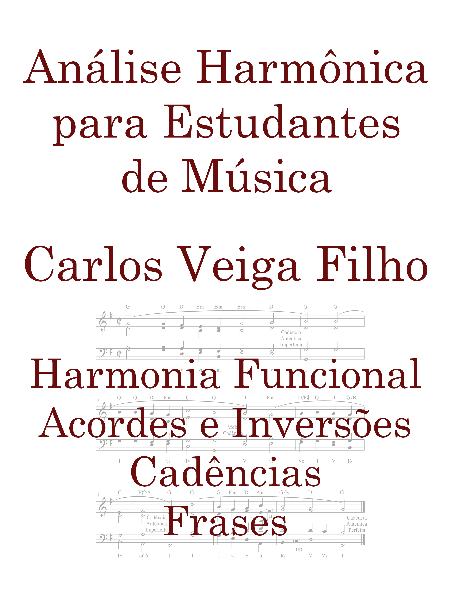

Read and recognise
Read in treble and bass clefs, identify chords and understand chord symbols.
From reading music to harmonic analysis
Harmonic Analysis for Music Students
Also published in Portuguese as Análise Harmônica para Estudantes de Música
A step-by-step approach to understanding how music works: read, listen to the examples and practise harmonic analysis.
Carlos Veiga Filho · Available in English and Portuguese

The English edition, Harmonic Analysis for Music Students, is available on Amazon.com. The free sample PDFs below are from the Portuguese edition.
What you will study
Designed for music students, especially in their first semesters at university, this book supports the study of music reading and harmony. Its explanations connect reading music with understanding chords, cadences and phrases.
Read in treble and bass clefs, identify chords and understand chord symbols.
Explore functional harmony, chords and inversions, with attention to melodic notes in their musical context.
Identify cadences and phrases to understand how the elements you study shape a piece of music.
Try before you buy
Read the chapters below for free in Portuguese. Links and QR codes at the end of the chapters take you to the companion materials: audio examples and printable exercises.
Free sample in Portuguese · PDF
Read sampleFree sample in Portuguese · PDF
Read sampleFree sample in Portuguese · PDF
Read sampleTwo language editions
The book is published in both English and Portuguese. Choose the language you want to read: the English edition is on Amazon.com, and the Portuguese print and Kindle editions are on Amazon Brazil.
English edition
This edition of Carlos Veiga Filho’s book is written in English.
Buy the book in English ↗Portuguese edition
Keep the book on your desk and follow each explanation on the printed page.
Buy the print edition in Portuguese ↗Portuguese edition
Read digitally and make studying part of your daily routine.
Buy the Kindle edition in Portuguese ↗Check current prices, formats, availability and delivery options on the Amazon page for your chosen edition. To ask about buying the print edition directly from the author, email carlos5veiga@gmail.com.
Meet the readers
Photos and videos shared during the promotion of the book.
Before you choose
For music students who want a better understanding of harmony, with a focus on foundational university courses. The book begins with reading in treble and bass clefs.
Yes. Chapters 1, 2, 3, 7, 8 and 16 are available for free in Portuguese in the Read a sample section.
Use the links and QR codes in the chapters to access the audio examples and printable exercises.
On the Amazon page for your chosen edition. The store shows prices and delivery options before you buy.